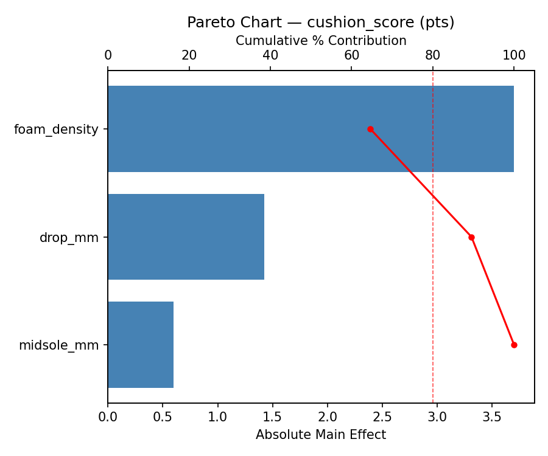
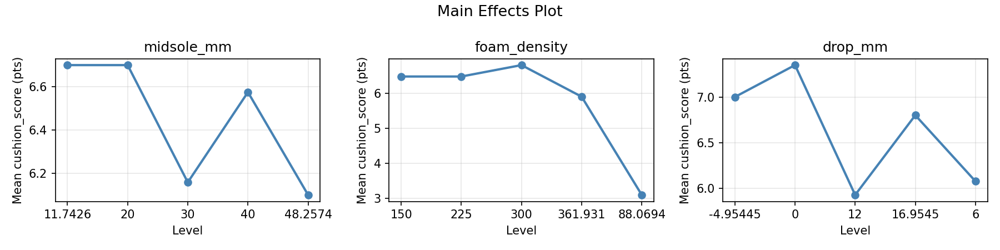
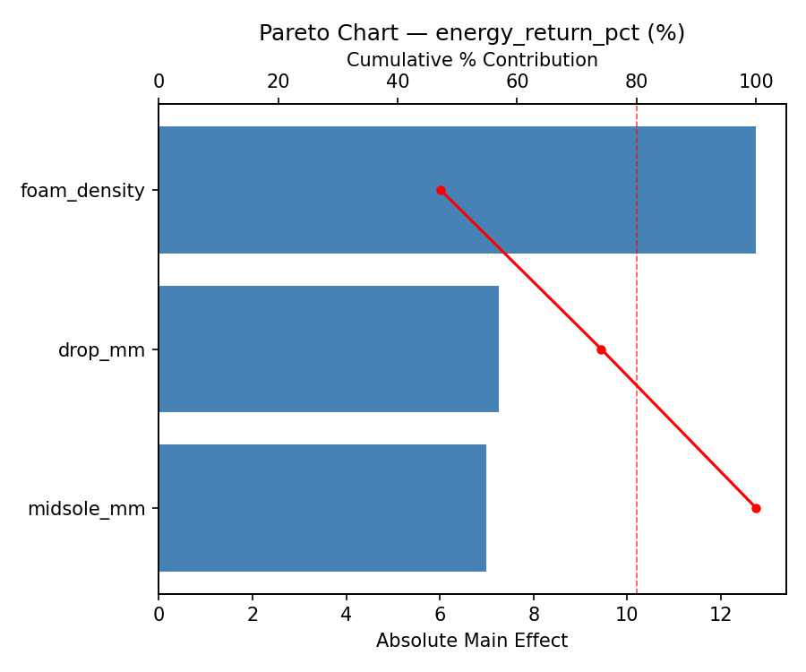
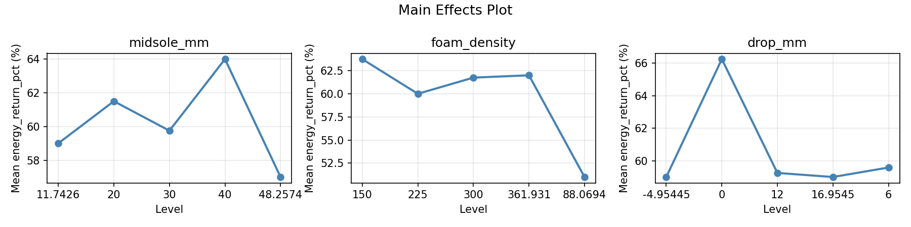
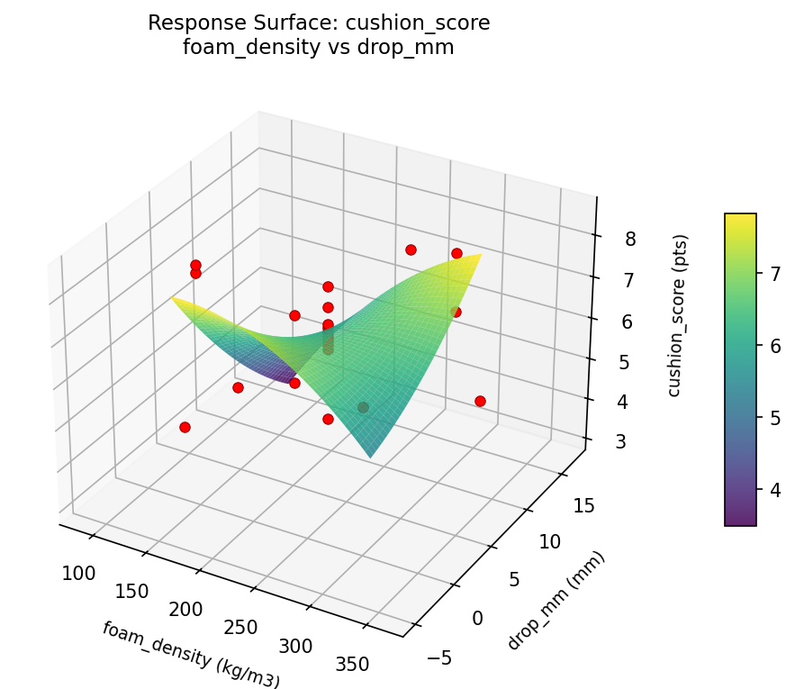
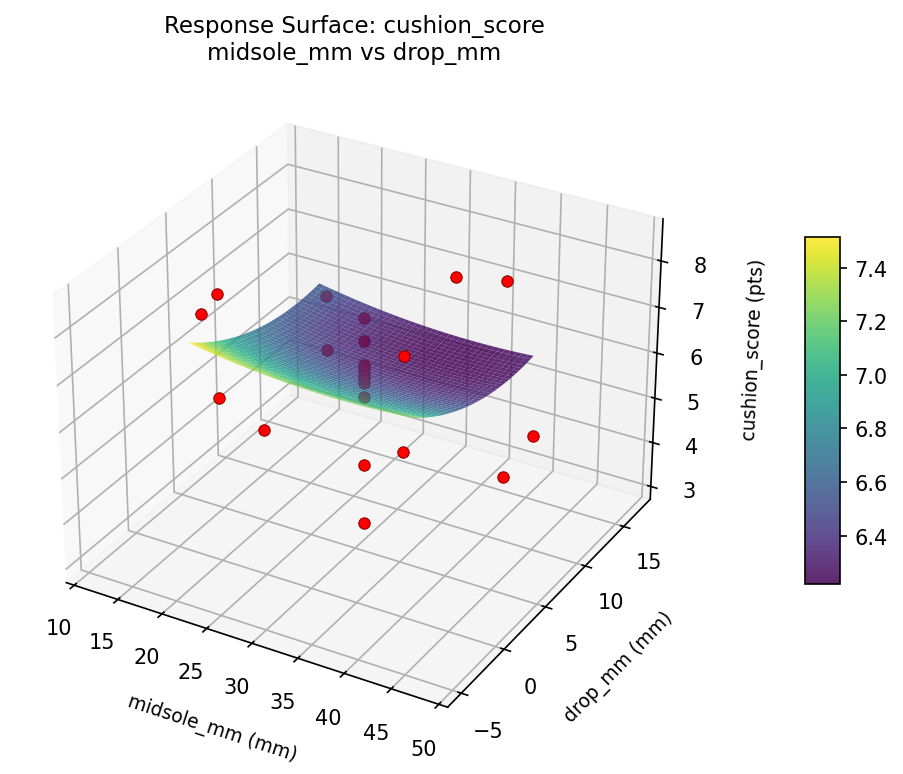
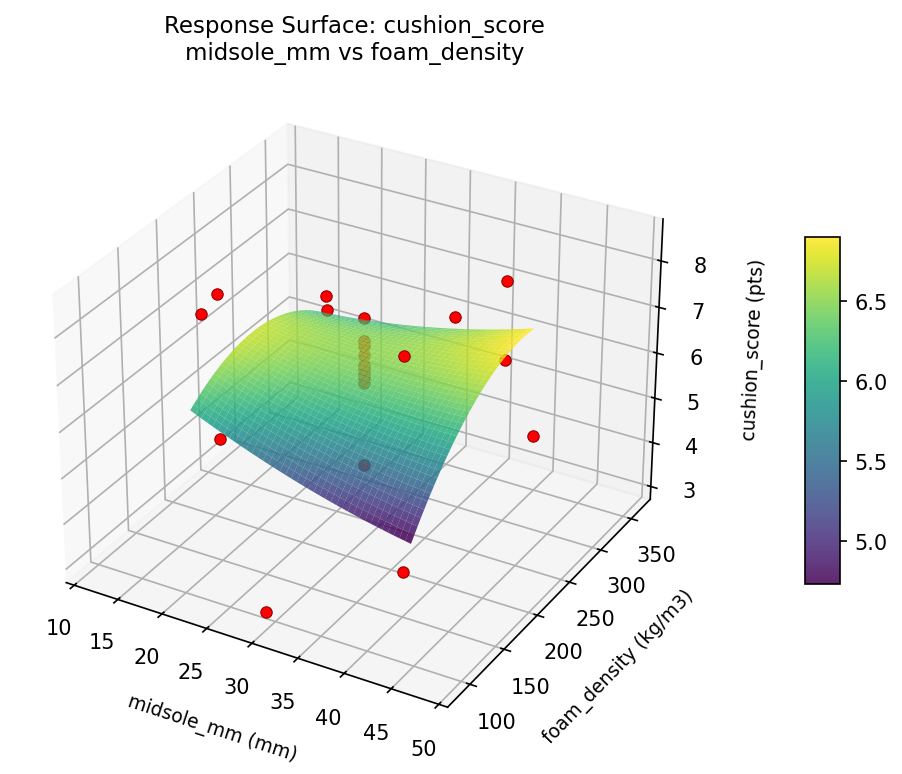
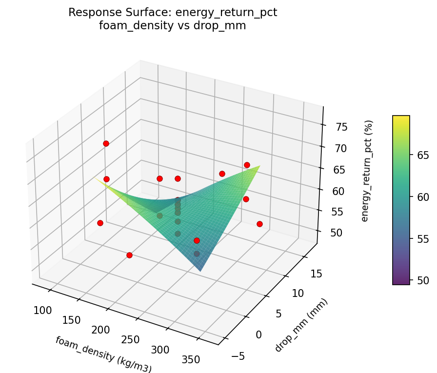
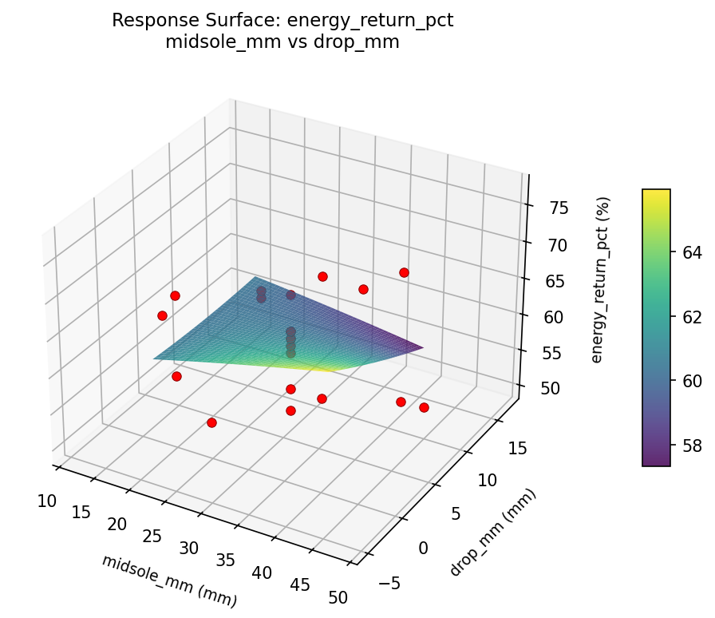
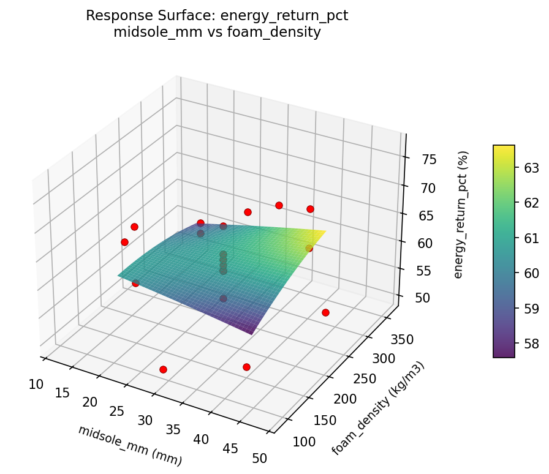

Summary
This experiment investigates running shoe comfort design. Central composite design to maximize cushioning and energy return by tuning midsole thickness, foam density, and drop height.
The design varies 3 factors: midsole mm (mm), ranging from 20 to 40, foam density (kg/m3), ranging from 150 to 300, and drop mm (mm), ranging from 0 to 12. The goal is to optimize 2 responses: cushion score (pts) (maximize) and energy return pct (%) (maximize). Fixed conditions held constant across all runs include upper = knit_mesh, outsole = rubber.
A Central Composite Design (CCD) was selected to fit a full quadratic response surface model, including curvature and interaction effects. With 3 factors this produces 22 runs including center points and axial (star) points that extend beyond the factorial range.
Quadratic response surface models were fitted to capture potential curvature and factor interactions. The RSM contour plots below visualize how pairs of factors jointly affect each response.
Key Findings
For cushion score, the most influential factors were foam density (64.6%), drop mm (24.9%), midsole mm (10.5%). The best observed value was 8.5 (at midsole mm = 40, foam density = 300, drop mm = 0).
For energy return pct, the most influential factors were foam density (47.2%), drop mm (26.9%), midsole mm (25.9%). The best observed value was 77.0 (at midsole mm = 11.7426, foam density = 225, drop mm = 6).
Recommended Next Steps
- Run confirmation experiments at the predicted optimal settings to validate the model.
- Consider whether any fixed factors should be varied in a future study.
Experimental Setup
Factors
| Factor | Low | High | Unit |
|---|
midsole_mm | 20 | 40 | mm |
foam_density | 150 | 300 | kg/m3 |
drop_mm | 0 | 12 | mm |
Fixed: upper = knit_mesh, outsole = rubber
Responses
| Response | Direction | Unit |
|---|
cushion_score | ↑ maximize | pts |
energy_return_pct | ↑ maximize | % |
Configuration
{
"metadata": {
"name": "Running Shoe Comfort Design",
"description": "Central composite design to maximize cushioning and energy return by tuning midsole thickness, foam density, and drop height"
},
"factors": [
{
"name": "midsole_mm",
"levels": [
"20",
"40"
],
"type": "continuous",
"unit": "mm"
},
{
"name": "foam_density",
"levels": [
"150",
"300"
],
"type": "continuous",
"unit": "kg/m3"
},
{
"name": "drop_mm",
"levels": [
"0",
"12"
],
"type": "continuous",
"unit": "mm"
}
],
"fixed_factors": {
"upper": "knit_mesh",
"outsole": "rubber"
},
"responses": [
{
"name": "cushion_score",
"optimize": "maximize",
"unit": "pts"
},
{
"name": "energy_return_pct",
"optimize": "maximize",
"unit": "%"
}
],
"settings": {
"operation": "central_composite",
"test_script": "use_cases/182_shoe_comfort/sim.sh"
}
}
Experimental Matrix
The Central Composite Design produces 22 runs. Each row is one experiment with specific factor settings.
| Run | midsole_mm | foam_density | drop_mm |
|---|
| 1 | 30 | 225 | 6 |
| 2 | 40 | 150 | 12 |
| 3 | 20 | 300 | 0 |
| 4 | 30 | 361.931 | 6 |
| 5 | 30 | 225 | 6 |
| 6 | 11.7426 | 225 | 6 |
| 7 | 30 | 225 | -4.95445 |
| 8 | 30 | 225 | 6 |
| 9 | 40 | 300 | 0 |
| 10 | 48.2574 | 225 | 6 |
| 11 | 30 | 225 | 6 |
| 12 | 30 | 88.0694 | 6 |
| 13 | 30 | 225 | 6 |
| 14 | 20 | 150 | 12 |
| 15 | 30 | 225 | 6 |
| 16 | 40 | 150 | 0 |
| 17 | 30 | 225 | 16.9545 |
| 18 | 40 | 300 | 12 |
| 19 | 30 | 225 | 6 |
| 20 | 20 | 150 | 0 |
| 21 | 20 | 300 | 12 |
| 22 | 30 | 225 | 6 |
Step-by-Step Workflow
1
Preview the design
$ python doe.py info --config use_cases/182_shoe_comfort/config.json
2
Generate the runner script
$ python doe.py generate --config use_cases/182_shoe_comfort/config.json \
--output use_cases/182_shoe_comfort/results/run.sh --seed 42
3
Execute the experiments
$ bash use_cases/182_shoe_comfort/results/run.sh
4
Analyze results
$ python doe.py analyze --config use_cases/182_shoe_comfort/config.json
5
Get optimization recommendations
$ python doe.py optimize --config use_cases/182_shoe_comfort/config.json
6
Generate the HTML report
$ python doe.py report --config use_cases/182_shoe_comfort/config.json \
--output use_cases/182_shoe_comfort/results/report.html
Real-World Experiment Workflow
ℹ
Physical Textile Process? Use the Manual Workflow
Textile experiments involve real fabrics, dyes, tension, and physical processes that require hands-on work and measurement. The simulation script above is for demonstration. For your real experiments, use record, status, and export-worksheet.
$ python doe.py export-worksheet --config use_cases/182_shoe_comfort/config.json \
--format csv --output worksheet.csv
$ python doe.py status --config use_cases/182_shoe_comfort/config.json
$ python doe.py record --config use_cases/182_shoe_comfort/config.json --run 1
$ python doe.py analyze --config use_cases/182_shoe_comfort/config.json --partial
$ python doe.py analyze --config use_cases/182_shoe_comfort/config.json
$ python doe.py optimize --config use_cases/182_shoe_comfort/config.json
$ python doe.py report --config use_cases/182_shoe_comfort/config.json \
--output report.html
✔
Works Without a Test Script
The analysis pipeline doesn't care how results were produced. Record your measurements with record, and the full analysis, optimization, and reporting pipeline works identically. Use --partial to get early insights before all runs are complete.
Features Exercised
| Feature | Value |
|---|
| Design type | central_composite |
| Factor types | continuous (all 3) |
| Arg style | double-dash |
| Responses | 2 (cushion_score ↑, energy_return_pct ↑) |
| Total runs | 22 |
Analysis Results
Generated from actual experiment runs using the DOE Helper Tool.
Response: cushion_score
Top factors: foam_density (64.6%), drop_mm (24.9%), midsole_mm (10.5%).
Pareto Chart

Main Effects Plot

Response: energy_return_pct
Top factors: foam_density (47.2%), drop_mm (26.9%), midsole_mm (25.9%).
Pareto Chart

Main Effects Plot

Response Surface Plots
3D surfaces fitted with quadratic RSM. Red dots are observed data points.
cushion score foam density vs drop mm

cushion score midsole mm vs drop mm

cushion score midsole mm vs foam density

energy return pct foam density vs drop mm

energy return pct midsole mm vs drop mm

energy return pct midsole mm vs foam density

Full Analysis Output
RSM surface: rsm_cushion_score_midsole_mm_vs_foam_density.png
RSM surface: rsm_cushion_score_midsole_mm_vs_drop_mm.png
RSM surface: rsm_cushion_score_foam_density_vs_drop_mm.png
RSM surface: rsm_energy_return_pct_midsole_mm_vs_foam_density.png
RSM surface: rsm_energy_return_pct_midsole_mm_vs_drop_mm.png
RSM surface: rsm_energy_return_pct_foam_density_vs_drop_mm.png
=== Main Effects: cushion_score ===
Factor Effect Std Error % Contribution
--------------------------------------------------------------
foam_density 3.7000 0.2821 64.6%
drop_mm 1.4250 0.2821 24.9%
midsole_mm 0.6000 0.2821 10.5%
=== Summary Statistics: cushion_score ===
midsole_mm:
Level N Mean Std Min Max
------------------------------------------------------------
11.7426 1 6.7000 0.0000 6.7000 6.7000
20 4 6.7000 1.3038 5.4000 8.5000
30 12 6.1583 1.2428 3.1000 7.6000
40 4 6.5750 2.1093 3.7000 8.3000
48.2574 1 6.1000 0.0000 6.1000 6.1000
foam_density:
Level N Mean Std Min Max
------------------------------------------------------------
150 4 6.4750 2.3301 3.7000 8.5000
225 12 6.4750 0.7783 4.4000 7.6000
300 4 6.8000 0.8124 6.3000 8.0000
361.931 1 5.9000 0.0000 5.9000 5.9000
88.0694 1 3.1000 0.0000 3.1000 3.1000
drop_mm:
Level N Mean Std Min Max
------------------------------------------------------------
-4.95445 1 7.0000 0.0000 7.0000 7.0000
0 4 7.3500 1.2152 6.3000 8.5000
12 4 5.9250 1.8246 3.7000 8.0000
16.9545 1 6.8000 0.0000 6.8000 6.8000
6 12 6.0750 1.2092 3.1000 7.6000
=== Main Effects: energy_return_pct ===
Factor Effect Std Error % Contribution
--------------------------------------------------------------
foam_density 12.7500 1.2508 47.2%
drop_mm 7.2500 1.2508 26.9%
midsole_mm 7.0000 1.2508 25.9%
=== Summary Statistics: energy_return_pct ===
midsole_mm:
Level N Mean Std Min Max
------------------------------------------------------------
11.7426 1 59.0000 0.0000 59.0000 59.0000
20 4 61.5000 5.0662 58.0000 69.0000
30 12 59.7500 4.0704 51.0000 67.0000
40 4 64.0000 11.4018 50.0000 77.0000
48.2574 1 57.0000 0.0000 57.0000 57.0000
foam_density:
Level N Mean Std Min Max
------------------------------------------------------------
150 4 63.7500 11.7580 50.0000 77.0000
225 12 60.0000 3.1334 54.0000 67.0000
300 4 61.7500 4.3493 58.0000 68.0000
361.931 1 62.0000 0.0000 62.0000 62.0000
88.0694 1 51.0000 0.0000 51.0000 51.0000
drop_mm:
Level N Mean Std Min Max
------------------------------------------------------------
-4.95445 1 59.0000 0.0000 59.0000 59.0000
0 4 66.2500 8.5391 58.0000 77.0000
12 4 59.2500 7.3655 50.0000 68.0000
16.9545 1 59.0000 0.0000 59.0000 59.0000
6 12 59.5833 4.1442 51.0000 67.0000
Pareto chart (cushion_score): use_cases/182_shoe_comfort/results/analysis/pareto_cushion_score.png
Pareto chart (energy_return_pct): use_cases/182_shoe_comfort/results/analysis/pareto_energy_return_pct.png
Main effects (cushion_score): use_cases/182_shoe_comfort/results/analysis/main_effects_cushion_score.png
Main effects (energy_return_pct): use_cases/182_shoe_comfort/results/analysis/main_effects_energy_return_pct.png
Optimization Recommendations
=== Optimization: cushion_score ===
Direction: maximize
Best observed run: #2
midsole_mm = 40
foam_density = 300
drop_mm = 0
Value: 8.5
RSM Model (linear, R² = 0.0425, Adj R² = -0.1171):
Coefficients:
intercept +6.3545
midsole_mm -0.3218
foam_density -0.0539
drop_mm +0.0029
RSM Model (quadratic, R² = 0.6221, Adj R² = 0.3386):
Coefficients:
intercept +6.7782
midsole_mm -0.3218
foam_density -0.0539
drop_mm +0.0029
midsole_mm*foam_density +0.9000
midsole_mm*drop_mm -1.1250
foam_density*drop_mm +0.5000
midsole_mm^2 -0.2068
foam_density^2 -0.3118
drop_mm^2 -0.1168
Curvature analysis:
foam_density coef=-0.3118 concave (has a maximum)
midsole_mm coef=-0.2068 concave (has a maximum)
drop_mm coef=-0.1168 concave (has a maximum)
Notable interactions:
midsole_mm*drop_mm coef=-1.1250 (antagonistic)
midsole_mm*foam_density coef=+0.9000 (synergistic)
foam_density*drop_mm coef=+0.5000 (synergistic)
Predicted optimum (from quadratic model):
midsole_mm = 20
foam_density = 150
drop_mm = 12
Predicted value: 8.0464
Model quality: Moderate fit — use predictions directionally, not precisely.
Factor importance:
1. midsole_mm (effect: 3.9, contribution: 59.3%)
2. drop_mm (effect: 1.4, contribution: 20.9%)
3. foam_density (effect: 1.3, contribution: 19.8%)
=== Optimization: energy_return_pct ===
Direction: maximize
Best observed run: #12
midsole_mm = 11.7426
foam_density = 225
drop_mm = 6
Value: 77.0
RSM Model (linear, R² = 0.1525, Adj R² = 0.0113):
Coefficients:
intercept +60.6818
midsole_mm -2.6585
foam_density +0.2045
drop_mm -0.6374
RSM Model (quadratic, R² = 0.5488, Adj R² = 0.2103):
Coefficients:
intercept +61.7213
midsole_mm -2.6585
foam_density +0.2045
drop_mm -0.6374
midsole_mm*foam_density +3.6250
midsole_mm*drop_mm -3.8750
foam_density*drop_mm +0.6250
midsole_mm^2 +0.5803
foam_density^2 -1.3697
drop_mm^2 -0.7697
Curvature analysis:
foam_density coef=-1.3697 concave (has a maximum)
drop_mm coef=-0.7697 concave (has a maximum)
midsole_mm coef=+0.5803 convex (has a minimum)
Notable interactions:
midsole_mm*drop_mm coef=-3.8750 (antagonistic)
midsole_mm*foam_density coef=+3.6250 (synergistic)
foam_density*drop_mm coef=+0.6250 (synergistic)
Predicted optimum (from quadratic model):
midsole_mm = 20
foam_density = 150
drop_mm = 12
Predicted value: 68.8537
Model quality: Moderate fit — use predictions directionally, not precisely.
Factor importance:
1. midsole_mm (effect: 23.0, contribution: 71.7%)
2. drop_mm (effect: 5.0, contribution: 15.6%)
3. foam_density (effect: 4.1, contribution: 12.7%)